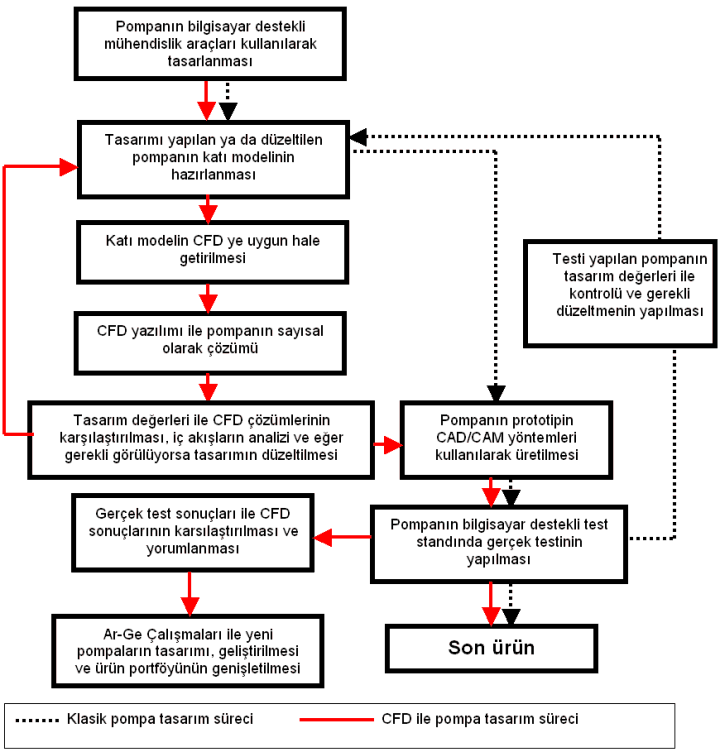
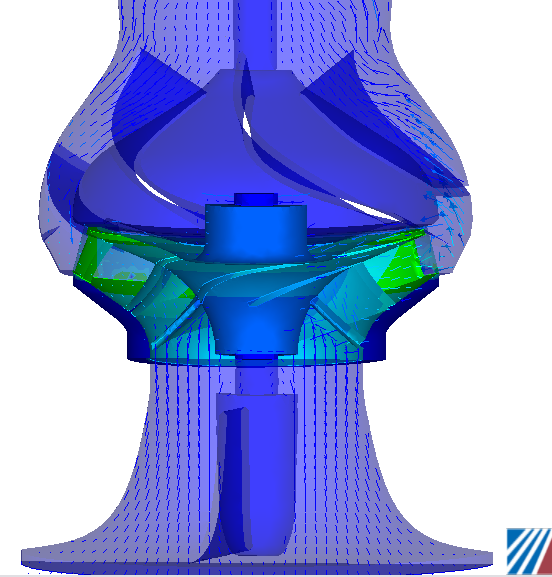
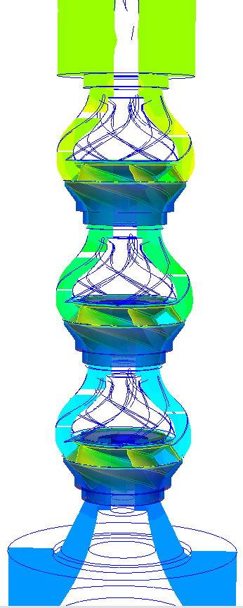
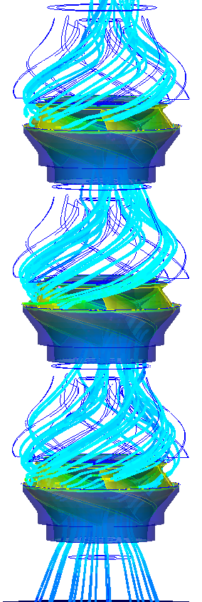
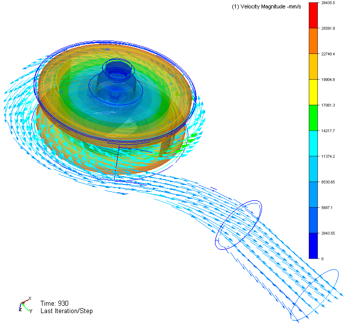
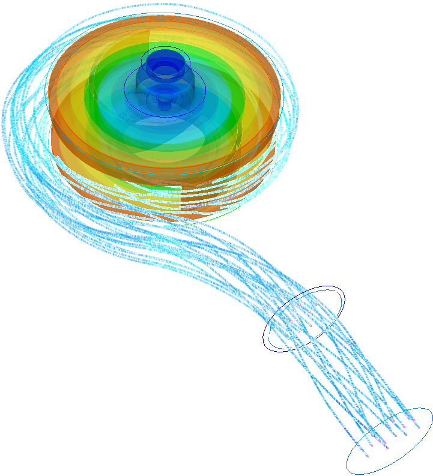

Not: Ýlk defa TurkCADCAM.net Dergisi 1. sayýsýnda (Ocak-Þubat 2006) yer alan bu makale, Aralýk 2008'de yüksek çözünürlüklü resimlerle birlikte TurkCADCAM.net Portalý'nda yayýnlanmaya baþlamýþtýr.
Giriþ:
Günümüzde hýzla artan rekabet ortamýnda, üretim ve iþletme maliyetlerindeki artýþlar, pompa tasarýmý ve iyileþtirilmesinde hedeflenen performans deðerlerindeki yüksek verime sahip pompalarý daha çabuk ve daha düþük maliyetli olarak üretmeyi zorunlu hale getirmektedir. Özellikle Ömür Boyu Maliyet yaklaþýmýnýn içeriðindeki gittikçe artan enerji maliyetleri, iþletme maliyetlerini arttýrmakta, bu da daha verimli pompalarýn daha çabuk tasarlanarak üretilmesinin önemini arttýrmaktadýr.
Günümüzde pompa tasarýmýnda iç akýþlarýn incelenmesi CFD (Computational Fluid Dynamics - Hesaplamalý Akýþkanlar Dinamiði) yazýlýmlarý ile yapýlabilmektedir. Performans deðerlerinin kontrolü, tasarým deðerlerinin daha yüksek verimli pompalarla saðlanabilmesi ve bütün bunlarýn daha düþük maliyetli bir tasarým sürecinden prototip üretimi aþamasýna getirilmesi için kullanýlabilen bu bilgisayar destekli mühendislik araçlarý tasarýmcýlara verdikleri ipuçlarý ile yardýmcý olmaktadýr.
Gerçek ürün üzerindeki deneyler yerine bilgisayar ortamýnda yapýlan sayýsal deneyler, tasarým ile son ürün ve gerçek testler arasýndaki maliyet arttýrýcý ara aþamalar öncesinde tasarýmýn ofis ortamýnda iyileþtirilmesine olanak saðlamaktadýr. CFD yazýlýmlarýnýn uygun CAD/CAM sistemleri ile birlikte kullanýlmasý son ürüne giden yolda maliyetleri düþürmekte, tasarýmýn güvenilirliðini arttýrmaktadýr.
Layne Bowler Pompa Sanayi A.Þ., 2003 yýlýndan beri yaptýðý yoðun araþtýrmalar sonucunda pompa tasarýmýnda günümüzün gerektirdiði ve geleceðe yönelik bu alt yapýyý 2005 yýlý baþlarýnda uygulamaya koymuþtur. Klasik pompa tasarým süreci ile CFD kullanýlan sürecin aþamalarý Þekil 1'de görülebilir.
Layne Bowler'de, tasarýmý yapýlan bir pompa, AutoCAD, Mechanical Desktop ve Inventor Series10 ile modellenip CFD analizine uygun hale getirilmektedir. Çeþitli tipteki pompalar tasarlandýktan sonra iç akýþlarýn incelenmesi, tasarým deðerlerinin kontrolü ve sorunlu bölgelerin gerekiyorsa düzeltilmesi ve böylece amaçlanan performans deðerlerine ulaþýlmasý için bir CFD yazýlýmý olan CFdesign kullanýlmaktadýr.

Þekil 1. Klasik pompa tasarým süreci ile CFD kullanýlan sürecin aþamalarý
Pompa tasarýmýnda CFD çözümü sonucunda, farklý tiplerde pompalar için araþtýrma amacýna baðlý olarak aþaðýda bazýlarý anýlan birçok çalýþma yapýlabilmektedir;
- Tek veya çok kademe pompa çözümleri,
- Pompa basma yüksekliði, debi deðerlerinin hesabý,
- Ýç akýþlarda oluþabilecek düzensizliklerin giderilmesi (tasarým iyileþtirmeleri),
- Hidrolik tork ve verim hesabý,
- Emiþ ve çýkýþ performans hesabý,
- Parametrik kavitasyon çalýþmalarý (Emmedeki Net Pozitif Yük - ENPY hesaplamalarý),
- Farklý devir uygulamalarýndaki performans deðerlendirmeleri,
- Eksenel ve radyal yüklerle ilgili çalýþmalar,
- Deðiþik kademelerde, hýzlarda, ölçeklerde sayýsal deneyler ile prototip üretimine geçiþ süresinin azaltýlmasý ve gerçek deney sayýsýnýn optimum düzeye indirgenmesi.
Bu çalýþmalar halen Layne Bowler'de CFdesign ile tek veya çok kademeli düþey milli ve dalgýç pompalarda (Þekil 2 ,3 ve 3-a), týkanmaz pompalarda (Þekil 4 ve 4-a) ve girdap pompalarýnda sürdürülmektedir.
Pompa tasarýmýnda CFD çözümü sýrasýnda izlenen yöntem;
a) CAD sisteminde tasarlanan pompa modelinin CFdesign'a aktarýlmasý,
b) Sýnýr koþullarýnýn tanýmlanmasý,
c) Sayýsal çözüm aðý tabakasýnýn oluþturulmasý,
d) Malzemelerinin atanmasý,
e) Dönüþ hýzýnýn tanýmlanmasý,
f) Analizde kullanýlacak türbülans modelinin seçilmesi,
g) Analiz çeþidinin belirlenmesi þeklinde gerçekleþmektedir.
Analiz sonuçlarýnýn basýnç, hýz bileþenleri, türbülans kinetik enerji deðiþimleri bazýnda yakýnsamasýndan sonra,pompanýn içi akýþ incelenmektedir. Yazýlým kullanýcýya sonuçlarýn incelenmesine ve irdelenmesine yardýmcý olacak birçok seçenek sunmaktadýr. Bu özellikler kullanýlarak emiþ, çark, difüzör ve çýkýþtaki akýþlar incelenerek bir sorun varsa bu sorunun nedeni tespit edilmeye çalýþýlmakta ve çözüme yönelik yaklaþýmlarýn bilgisayar ortamýnda uygulanmasý ile üretim öncesi iyileþtirilmelere gidilmektedir.
Sayýsal deneylerin sonuçlarýna göre hedeflenen deðerlere uygun görülen tasarýmlar CFD-CAD/CAM entegrasyonu ile tasarým ölçülerinde üretilmekte, gerçek deneyler sonrasý müþterilere teslim edilmektedir.
Bu birbiri ile entegre tasarým, analiz ve üretim çalýþmalarý ile üretim maliyetleri düþürülmektedir. Her proje tasarýmdan üretime ve son ürünün müþteriye teslimine kadarki süreçte bir Ar-Ge faaliyeti olarak ele alýnmaktadýr.

Þekil 2. Dalgýç pompa hýz vektörleri
 |
 |
Þekil 3. Çok kademeli düþey milli pompa |
Þekil 3-a. Çok kademeli düþey milli pompa |

Þekil 4. Týkanmaz pompa hýz vektörleri

Þekil 4-a. Týkanmaz pompa |